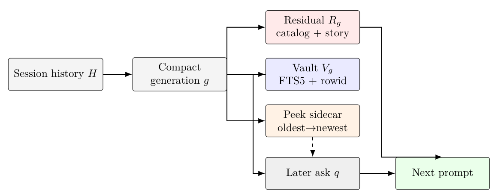
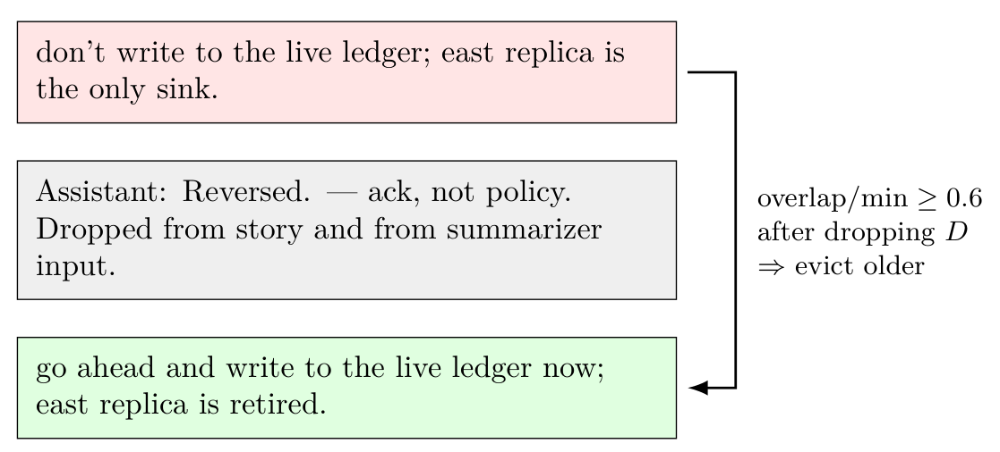
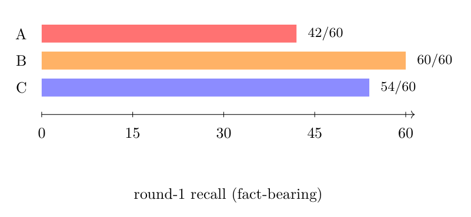

Preprint · Independent Research
Extractive Residuals After Compaction
Abstract
Long-running agent chats compact older turns so the next prompt fits a
context window. The usual residual is a paid language-model paragraph.
We ask a narrower question than “should agents stop summarizing?”: can a
bounded extractive handle catalog, plus a last-wins
selected story and a session-scoped SQLite FTS vault, serve as a
factory-default residual without pretending that summarization is
obsolete? A claim-grade 11×4×3×2 factorial
(264 trials, $1.23) shows complementarity: the summarizer keeps designed
catalog-miss nonces and drops generic policy stems; the catalog keeps
stems and drops nonce prose. Hybrid-plus-stems is the only compact
residual that keeps both. Dump-and-query uniquely recovers buried prose
when the later ask overlaps and peek has already dropped the middle; it
does not select. A pre-registered factory-flip gate then passes on
Luna and Sol. Factory residual in Marionette v0.9.244 is
catalog. v0.9.245 paints last-wins compact receipts and
vault-cite chips on the transcript; that is a surface, not a residual
algorithm change. Summary and hybrid remain Settings opt-ins. We do
not restamp claim_ready on the experimental cells, and we
do not claim a universal “stop summarizing.”
Key findings
-
Complementarity, not a knockout. On the claim-grade merge,
fact-bearing
residual_recall_round1is A 42/60, B 60/60, C 54/60.claim_ready=trueon that receipt. That ranking is not a default flip. - Dump-and-query is complementary. Vault-on recovers peek-evicted mid-history prose 3/3 on both models; vault-off is a refuse or peek miss. Recap and paraphrase failed catalog+vault until compact wrote a selected story.
-
miss_plandied on purpose. Empty FTS dumping the compact-time user extract poisoned unrelated asks. Empty FTS is now empty. Paraphrase C is 3/3 because the story is already in the residual. - Factory-flip gate passed on both models. 16 experimental cases, A vs C, 96 trials each (Luna $0.082, Sol $0.830). Factory residual is catalog as of v0.9.244. v0.9.245 then paints last-wins receipts and vault cites. Last-wins and ack hygiene are part of the residual, not a later prompt trick.
-
An honestly localized limit. We did not loosen the oracle to
force summarizer last-wins to 3/3. We did not add experimental cells
to
live_cases(). Summary stays a Settings opt-in.
Figures


